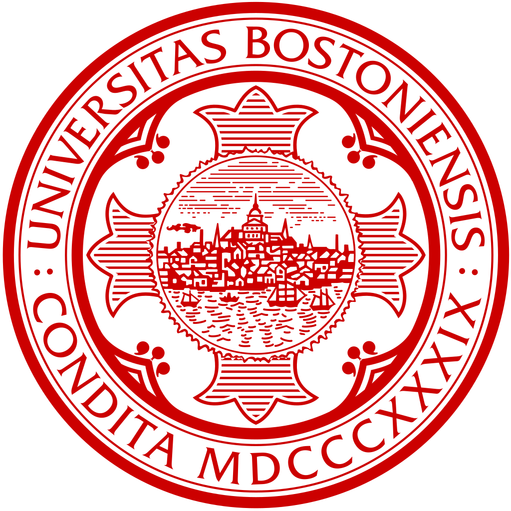
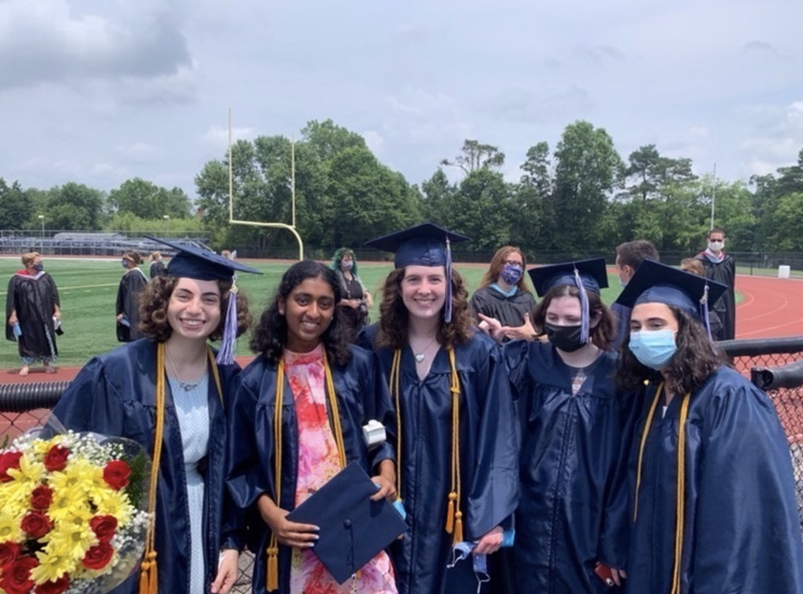

Boston University
Computer Science B.A.
During my time at Boston University (BU), I completed my Bachelor Of Arts degree (BA) in computer science, with a concentration on systems. This entailed taking courwork like Embedded Systems, Distributed Systems, Computer Architecture, and Database Systems. I also took courswork pertaining to data science, like Linear Algebra, and Foundations of Data Science. During this time, I did research in systems, looking at CPU efficiencies, and exploring hardware versus software solutions. This work lead to the creation of educational content, focusing on how basic circuits work for elementary school age children. Along with courswork, I was involved in a lot of campus activites like Hack4Impact, an undergraduate club that creates software for charities, as well as participating in and speaking on panels for Girls Who Code! |
 |
Chatham High School
High School Diploma
I recieved my high school diploma from Chatham High School. During this time I recieved two scholarships for further education, the 1st Annual Tessa Handerhan Memorial Inclusion Scholarship and the Democratic Scholarship Committee. I participated in after school activities like FIRST Robotics, Academic Team, Model United Nations, and the Lingusitics Club. I also recieved the Bell Award for excellence and commitment to the social sciences. I took AP and honors courses in Statistics, Environmental Science, Art History, French, American and World History, Algebra, Geometry, and Precalculus. Along with my high school coursework, I took college courses in Calculus, Japanese, and Macro and Micro Economics.
Georgetown Data Science Summer Program
Summer Program
During high school, I completed a month-long summer program at Georgetown focused on Data Science. We used public APIs to retrieve data on different climate events and to create statistics and visualizations about these events. We also listened to public speakers talk about how AI had applications to public policy, and were introduced to basic programming languages like HTML, CSS, and R. |